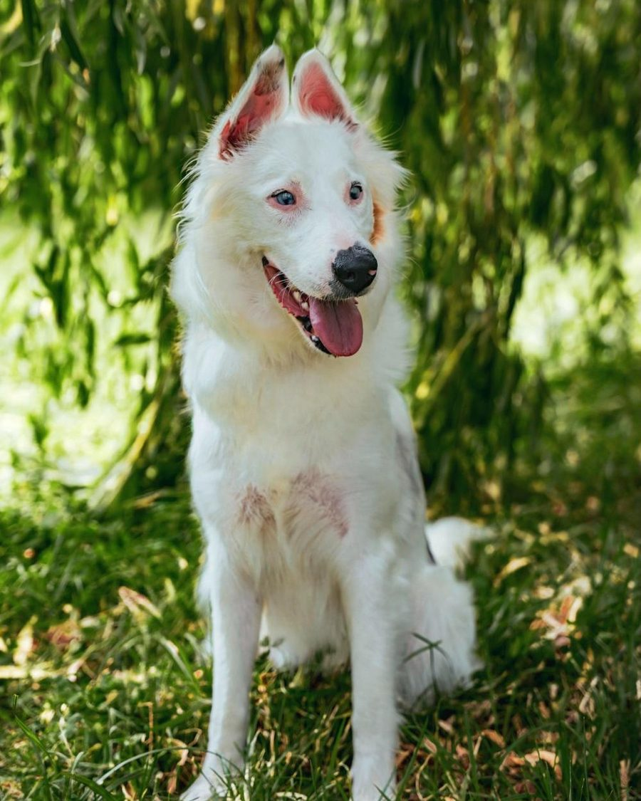
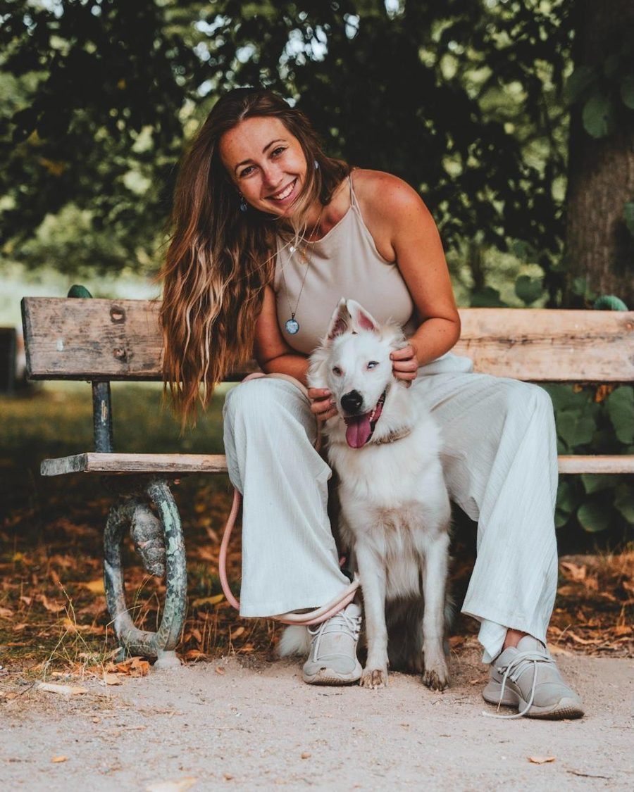

Všechno začalo jednou psí holkou.

Malvínka je fenka australského ovčáka s dvojitým merle zbarvením. Je neslyšící a má výrazně omezený zrak. Její příchod do našeho života nám otevřel svět, na který jsme se předtím dívali úplně jinak.
Postupně jsme začali vnímat, kolik situací, které lidé považují za obyčejné, může být pro psa se smyslovým hendikepem náročných. Jak důležitý je bezpečný prostor, předvídatelné prostředí a možnost rozhodnout se, kdy chce být v kontaktu a kdy potřebuje klid.
Jedna z každodenních situací nám ukázala, že bezpečí není jen o odstranění překážek. Když jsme Malvínku nechtěně vylekali při pohybu kolem pohovky, utekla do kouta místnosti. Nepotřebovala okamžité utěšování ani objetí. Potřebovala prostor a čas, aby znovu získala jistotu.

Právě podobné zkušenosti nás přivedly k myšlence SensiHome PAW.
Chceme vytvářet prostředí, které nebude psa zbytečně znejisťovat, ale naopak mu umožní lépe se orientovat, odpočívat a žít co nejvíce samostatně.
Malvínka je naší inspirací, ambasadorkou projektu a důvodem, proč jsme se rozhodli tuto cestu začít.